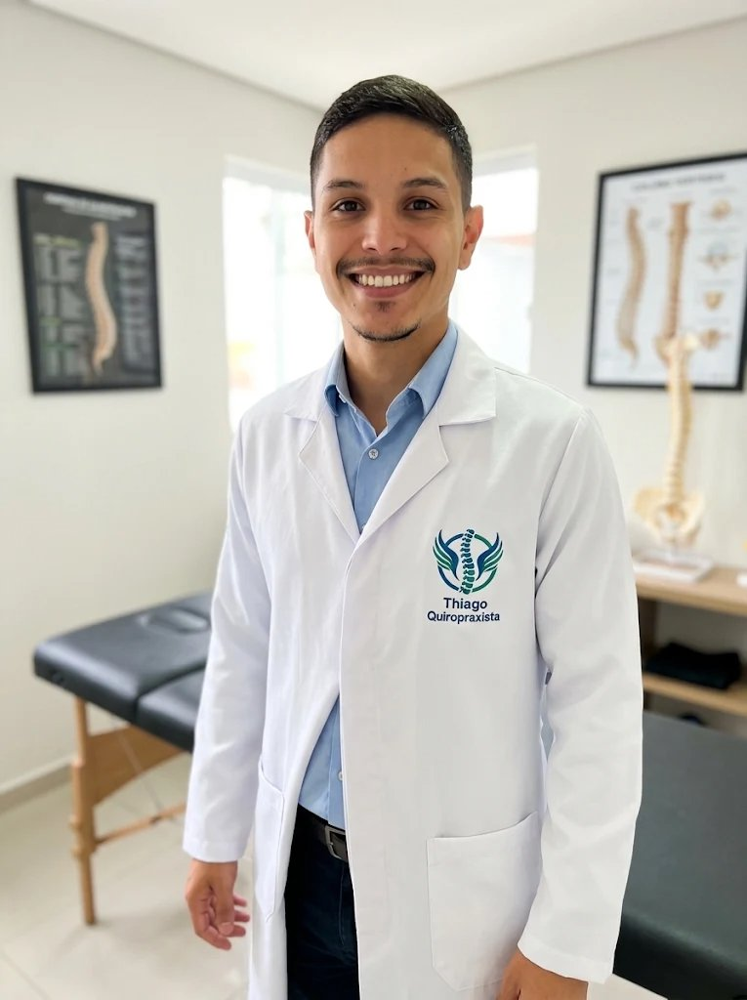

Dor Lombar e Cervical
Tratamento eficaz para dores agudas ("travadas") ou crônicas na região lombar, costas e pescoço (torcicolo).
Atendimento clínico personalizado com Thiago Oliveira Souza. Através de ajustes quiropráticos precisos e seguros, tratamos a causa raiz da sua dor sem o uso de medicamentos ou cirurgias.

Tratamento focado na saúde integral da sua coluna
Nosso foco é devolver o alinhamento correto e a mobilidade das articulações, aliviando a sobrecarga sobre os nervos e músculos.
Tratamento eficaz para dores agudas ("travadas") ou crônicas na região lombar, costas e pescoço (torcicolo).
Descompressão articular segura para aliviar dores irradiadas para os glúteos, pernas, braços e formigamentos.
Muitas dores de cabeça têm origem tensional nas vértebras cervicais. O ajuste devolve o relaxamento e reduz as crises.
Ideal para quem trabalha horas sentado no computador ou celular e sente tensão nos ombros e desalinhamento.
Prevenção de lesões, ganho de mobilidade articular e recuperação acelerada para praticantes de atividades físicas.
Com o sistema nervoso livre de interferências e sem tensões musculares, seu corpo descansa profundamente.
Um processo estruturado, transparente e seguro desde o seu primeiro contato até a sua recuperação completa.
Conversamos detalhadamente sobre a sua rotina, histórico de saúde, exames anteriores e as características da sua dor.
Realizamos testes ortopédicos, neurológicos e de palpação para identificar exatamente quais vértebras ou articulações estão comprometidas.
Já na primeira sessão (salvo contraindicações), aplicamos técnicas manuais precisas e indolores para restaurar a função articular e aliviar a dor.
Você recebe orientações ergonômicas e um plano personalizado para estabilizar sua coluna e evitar que a dor volte no futuro.
Quiropraxista Clínico • Especialista em Saúde da Coluna
Minha missão é ajudar pessoas a retomarem suas atividades diárias, seu trabalho e seu lazer sem as limitações impostas pela dor física. Acredito em uma abordagem humana, onde cada paciente é ouvido com atenção e avaliado de forma única.
Através da Quiropraxia, utilizo técnicas manuais seguras e adaptadas para cada biotipo e faixa etária — desde jovens e atletas até idosos — promovendo o equilíbrio biomecânico e a saúde integral do corpo.
A satisfação de quem voltou a viver com qualidade de vida e movimento livre.
"Cheguei ao consultório do Thiago com uma crise no ciático que mal conseguia caminhar. Já na primeira sessão senti um alívio enorme. Profissional extremamente atencioso e seguro no que faz!"
"Trabalho o dia todo no computador e vivia com dores no pescoço e dor de cabeça constante. O acompanhamento com o Thiago mudou minha rotina. Hoje durmo melhor e trabalho sem dor."
"Eu tinha um pouco de receio dos estalos antes de ir, mas o Thiago explicou cada passo com tanta calma e profissionalismo que me senti 100% seguro. Recomendo de olhos fechados."
Respostas claras para as dúvidas mais comuns antes da primeira sessão.
Não! O ajuste quiroprático é um movimento rápido, preciso e indolor. Na grande maioria dos casos, o paciente sente uma sensação imediata de alívio, leveza e relaxamento muscular logo após o ajuste.
Isso varia de acordo com o tempo em que você sente a dor e o grau de comprometimento da coluna. Muitos pacientes relatam alívio significativo já na primeira ou segunda sessão, mas na avaliação inicial definiremos um plano ideal para o seu caso.
Se você já tiver exames recentes (como Raio-X, Ressonância Magnética ou Tomografia), é ótimo trazê-los! Caso não tenha, não se preocupe: faremos toda a avaliação clínica e física no consultório e, se houver necessidade, solicitaremos exames complementares.
Sim! As técnicas são totalmente adaptadas para a idade, peso e condição clínica de cada pessoa. Atendemos desde jovens e gestantes até idosos (utilizando técnicas suaves e específicas quando necessário).
Entre em contato pelo WhatsApp ou preencha o formulário ao lado para verificarmos os horários disponíveis.
(11) 99999-9999
Av. Paulista, 1000 - Sala 504, Centro
São Paulo - SP
Segunda a Sexta: 08h às 19h
Sábados: 08h às 13h
Preencha abaixo e sua mensagem será enviada diretamente para o nosso WhatsApp.